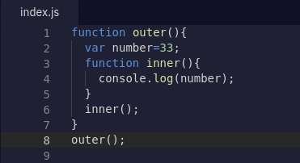

According to MDN : A function bundled together with its lexical scope forms a closure. In simple words, A function that uses a value that outside of its context is closure.
Let's understand it by a example,
Output: 33
According to definition, inner( ) is a function that uses a variable number that is not the part of its scope. This is the closure in javascipt.
At line 7 , outer function returns the entire inner ( ) and store it in the functionReference variable. After line 7, execution of outer function is completed , so memory , execution context and call stack of outer () is empty now.
So now come to line 8, it is the function call of inner ( ). Guess what will be the output?
Will it print undefined?
Will it show reference error?
Or Will it print 33?
Execution of outer( ) is completed still number can access outside of the outer ( ).This is the closure. inner ( ) returned from outer( ) still remember the lexical scope of parent function, and thar's why it remember the value of number even if it is outside of its scope.
This is power of closure in js. if we go deep into another function still it remember the lexical scope of its parents's parent function.
In above example, there are nesting of closures. So inner function remembers the lexical scope of outer( )'s parent function which is demo( ). aT line 12 execution of demo( ) is completed, and it returns outer ( ). At line 13, there is function call of outer( ), at the end of outer( ) inner ( ) will executes and it will remember the both variables even if they are not in its block context.